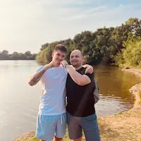

Guntars Celmins | WDD 130
Hi, I'm Guntars, originally from Riga, Latvia, and currently living in England. I'm 35 years old, and I absolutely love exploring new places, meeting new people, watching movies, and taking photos. Traveling has always been a big part of my life. I've been fortunate enough to visit many amazing destinations, from the Macedonia to the bustling streets of Lithuania. It's not just about the places for me; it's the people I meet along the way that make the journey truly special. I've made friends all over the world, from sharing meals with locals in Balcans to enjoying tea with them. Back in Latvia, I was known for my movie nights. I'm a huge film enthusiast, and I love introducing my friends to hidden cinematic gems from around the world. There's something magical about the shared experience of watching a great film and discussing it afterward. But my greatest passion is photography. I carry my camera with me everywhere I go, capturing the beauty of the world and the moments that matter most. Whether it's the architecture of old European cities or candid smiles shared with friends, photography allows me to tell stories through images. Now, here in England, I'm continuing my journey of exploration, connection, and creativity. Each day is a new opportunity to discover this beautiful country and share its wonders through my photographs. Life is an adventure, and I'm grateful for the chance to live it to the fullest.